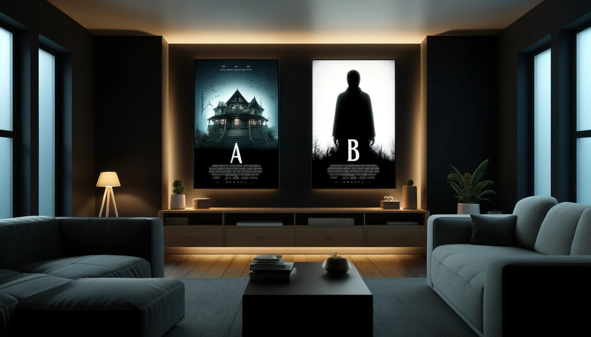

Structurer vos A/B tests pour les Campagnes CRM

Contexte
Dans l’univers dynamique du marketing, l’optimisation des campagnes CRM est devenue un impératif pour les entreprises visant à maximiser l’engagement client et le ROI.
Parmi les nombreuses stratégies d’optimisation, l’A/B testing se démarque comme un outil puissant et indispensable. Cette méthode permet aux marketeurs de prendre des décisions basées sur des données concrètes plutôt que sur de simples intuitions.
Qu’est-ce que l’A/B testing ?
L’A/B testing est une méthode comparative qui consiste à présenter deux versions (A et B) d’un élément à différents segments de votre audience. L’objectif est de déterminer quelle version performe le mieux selon des critères prédéfinis.
Dans le contexte des campagnes CRM, ces tests peuvent porter sur divers éléments tels que :
- Les objets des e-mails
- Le contenu des messages
- La mise en page et le design
- Les moments d’envoi
- les segments qui régissent le mieux aux emails/SMS
Au-delà de ces optimisations tactiques, l’A/B testing en CRM peut répondre à des questions stratégiques cruciales, comme : “Mes campagnes CRM génèrent-elles réellement du chiffre d’affaires additionnel ?”
Les Raisons Clés d’Adopter l’A/B Testing
- Prise de décision basée sur les données : Plutôt que de se fier à l’intuition, l’A/B testing fournit des preuves concrètes de ce qui fonctionne.
- Optimisation continue : Les tests réguliers permettent une amélioration constante des performances des campagnes.
- Meilleure compréhension de l’audience : Les résultats des tests offrent des insights précieux sur les préférences et comportements des clients.
- Réduction des risques : En testant à petite échelle, vous évitez de déployer des campagnes inefficaces à grande échelle.
- Augmentation du ROI : L’optimisation basée sur les résultats des tests conduit généralement à une meilleure performance et un meilleur retour sur investissement.
Mise en œuvre
Dans cette section, nous plongeons au cœur d’une question cruciale pour tout professionnel du marketing CRM : Vos campagnes CRM génèrent-elles véritablement un chiffre d’affaires additionnel ?
Structurer vos A/B tests pour mesurer l’impact réel de vos campagnes CRM
Cette approche étape par étape vous permettra de :
- Concevoir une expérience A/B robuste
- Isoler l’impact spécifique de vos campagnes CRM
- Quantifier précisément le chiffre d’affaires attribuable à vos actions
- Interpréter les résultats pour prendre des décisions éclairées